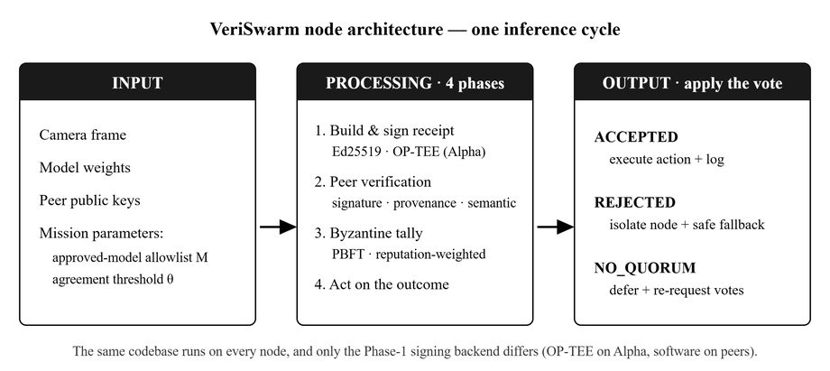
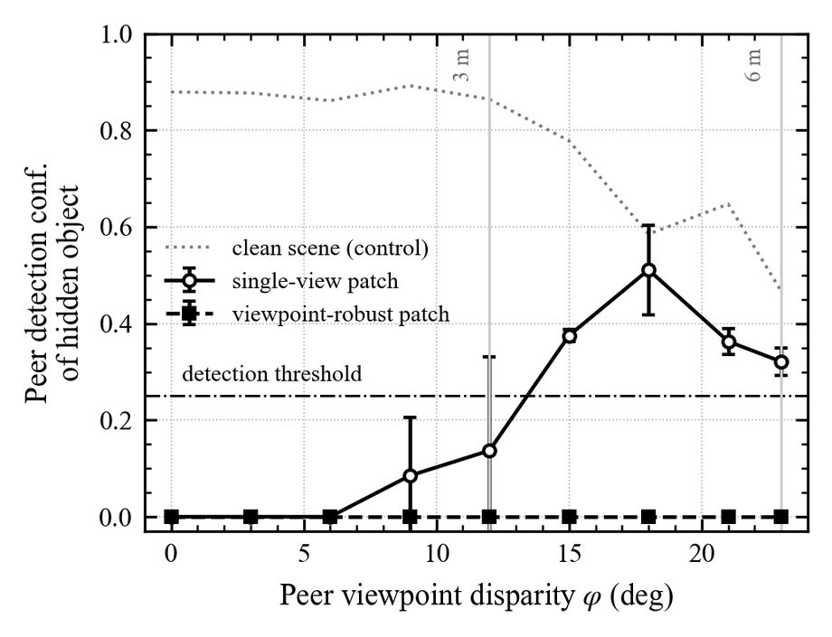
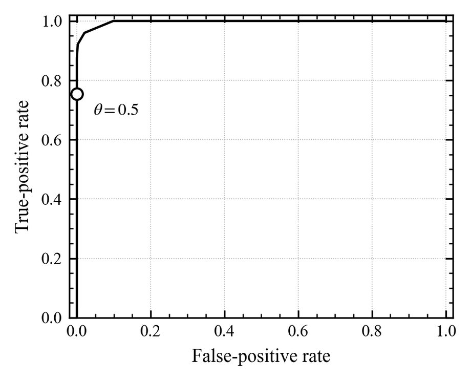
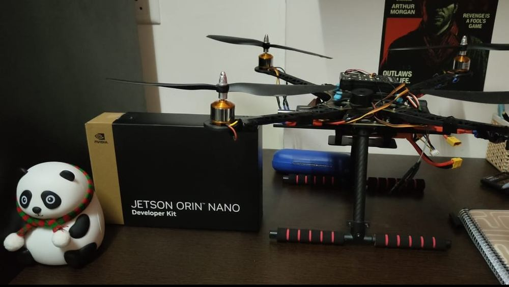

A drone with a swapped model, or a camera fooled by a printed patch, keeps sending actions that look perfectly normal. VeriSwarm makes the rest of the swarm catch it.
After every inference, a drone signs a receipt that binds who it is, the frame it saw, the model it ran and the action it chose — under one signature made inside an OP-TEE secure element. Peers verify the signature, check the model hash against an approved list, and only where their camera footprints overlap, compare the claimed action with what they saw themselves.
Disputes go to a reputation-weighted Byzantine quorum that tolerates ⌊(k−1)/3⌋ lying voters. A drone that keeps losing consensus decays to a floor weight and is dropped. The protocol logic is pinned down by 102 property-based tests.
First author · Second author: Dr. Subbulakshmi T, VIT Chennai
Measured on the Jetson Orin Nano — the slowest device in the swarm, so these are worst-case numbers.



The honest part: the semantic check has a limit. A patch deliberately optimised to work across viewpoints does defeat it — so the paper measures that case instead of citing its way around it.
Built, not only simulated
The hardware root of trust is mine end to end: a custom OP-TEE Trusted Application that signs inside the ARM TrustZone secure world on a physical Jetson Orin Nano. I built the airframe around it and ran the system both in PX4/Gazebo simulation and in real flight.

AirframePython · gRPC / protobuf · PyTorch · YOLOv8n · OP-TEE · ARM TrustZone · Ed25519 · PX4 SITL · Gazebo · Jetson Orin Nano
Manuscript in preparation for an IEEE journal.